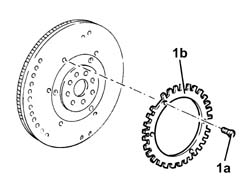

1024B60 PHONIC WHEEL ON FLYWHEEL - R R
- Path
- Procedures > 10 ENGINE UNIT > 1024 CRANKSHAFT AND FLYWHEEL > 1024B ENGINE FLYWHEEL > 1024B60 PHONIC WHEEL ON FLYWHEEL - R R
- Kind
- repair procedure (removal / refitting; the operation number is the code)
- Applies to
- engines: 3.2 V6; all production periods
- Interactive page
- https://sloeber94.github.io/elrnDB-aGt/en/#/125000945
Applies to: engines: 3.2 V6; all production periods
 Removing
Removing
 Refitting
Refitting1. Unscrew the bolts (1a) and remove the flywheel (1b) for the rpm sensor from the flywheel.

Applies to: engines: 3.2 V6; all production periods
Refitting
RemovingFit a new flywheel for the rpm sensor on the flywheel and fix it using the bolts to the specified torque
 | Fastening | Component | Ø | Value (daNm) |
|---|---|---|---|---|
- | - | - | - | - |